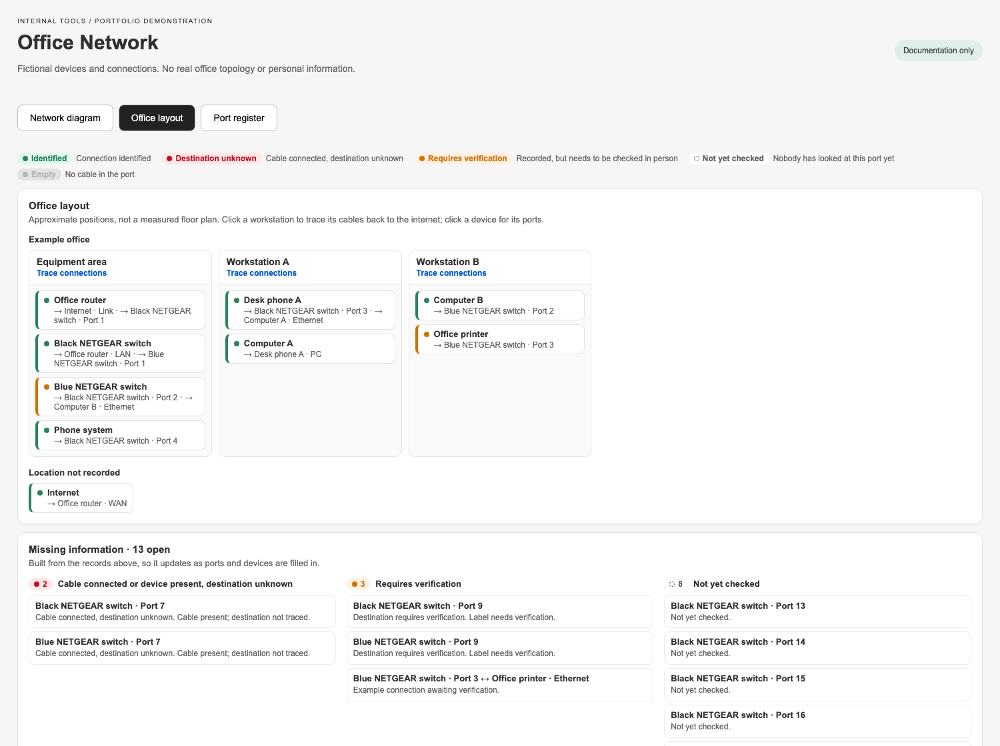
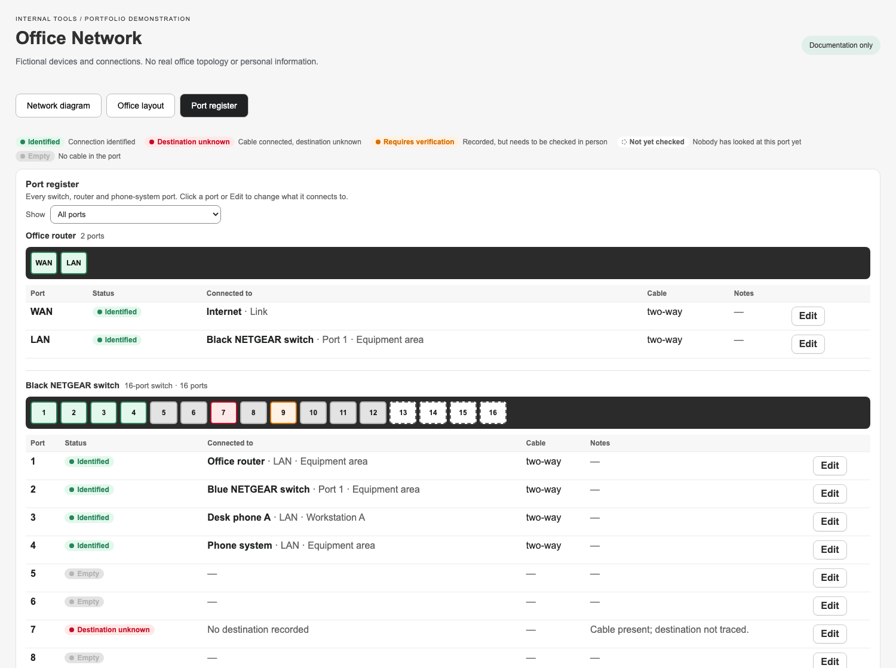

The problem showed up during an outage
Our office network had grown over time: a router, phone system, switches, desk phones, computers, printers, and payment terminals. After a Verizon outage, making changes was harder than it needed to be. Some cables were labelled, some destinations were unknown, and much of the knowledge lived in people’s heads.
I wanted to understand the setup myself and leave behind something other people could use. The result was Office Network, a documentation feature inside our existing Shopify-embedded admin app. It records the network; it does not scan, connect to, or configure the hardware.
Map what is known and make the gaps visible
The most important decision was to keep uncertainty explicit. An unchecked port is different from an empty one. A cable that is physically plugged in, but has an unknown destination, should remain visibly unresolved.
- Green: connection identified.
- Red with a question mark: cable present, destination unknown.
- Orange dashed: recorded or labelled, awaiting verification.
- Gray: confirmed empty port.
- Neutral dashed: not yet checked.
The open investigations list comes from the same records as the map. As a cable gets traced and its record is updated, the unresolved item disappears. Unusual connections can be recorded as found and flagged for verification, rather than silently changed to fit an assumption.
Three ways into the same information
The network diagram shows equipment as nodes, with switch faceplates and connection points for individual ports. Clicking a device highlights its path back to the internet; hovering a cable shows both ends. Zoom, pan, full screen, saved positions, and PNG export help people navigate and share the map.
The office layout groups devices by workstation and area. The port register provides a table for inspecting and editing each port’s destination, cable label, colour, status, and notes. CSV and JSON exports make the documentation portable.




Built while walking through the office
I started with a static HTML prototype, then worked with Claude Code to turn it into a data-driven app feature. I directed the design, supplied the real-world observations, and tested the tool; Claude Code handled the implementation.
A port-by-port walkthrough became part of the build process. I checked switches and desks, photographed equipment, and reported what I found. The records and interface were refined over two days, with small deployments as the documentation became more complete.
That testing changed the interface too: cables were routed away from text, related switches sat side by side, details moved into a drawer, and ports remained clickable in full screen. Equipment photos helped distinguish actual model names from service-provider branding.
One data model behind all three views
Devices, ports, locations, and connections are separate database records. Updating a connection updates the diagram, register, and investigations together. The feature uses React Router, Polaris components, Prisma, and Postgres, with React Flow for the diagram.
The layout logic arranges devices by their distance from the internet, keeps connected switches on the same row when appropriate, and positions downstream equipment beneath its switch ports to reduce crossings. Automated tests cover status rules, validation, layout, seed data, and CSV export.
What changed
The office now has a shared visual map that staff can open and update through the existing admin login. Most unknowns were resolved during the walkthrough; the remaining questions stay visible in the tool.
The practical result is a better starting point for the next change or outage: a map and a list of open questions, instead of reconstructing the network from scratch.